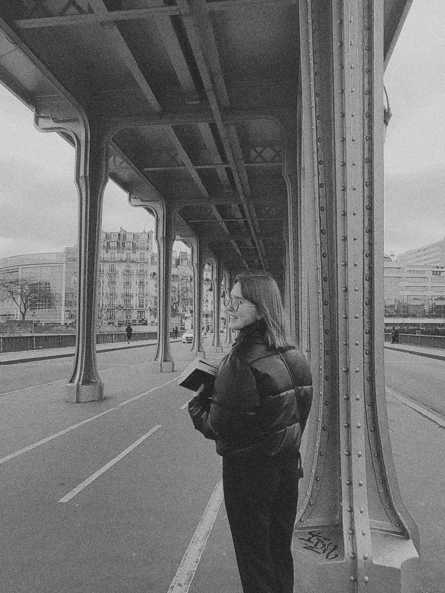
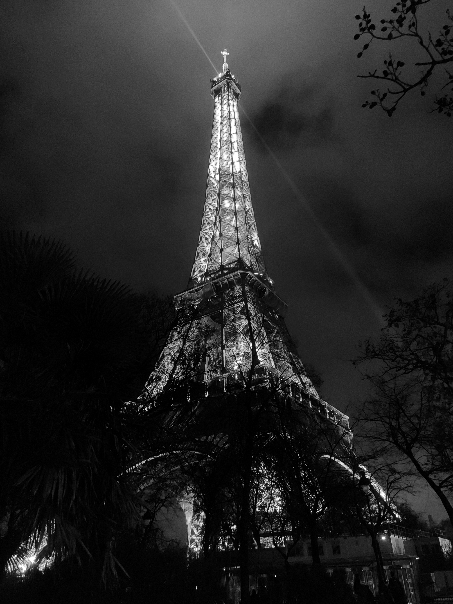

Laura Challier, Laura, LeRat, Laulau, Lau'... comme vous préférez :)

Petite sudiste parisienne, je suis à mi-temps la plus grande fan de la Tour Eiffel et jeune étudiante de 19 ans en deuxième année de DNMADe Graphisme - Image de Communication à l'Elmad Auguste Renoir. En ce moment je recherche un stage étudiant sur une période de 3 mois entre le 9 mai et le 26 juillet 2023.
→ Mon portfolio ←
Ma formation
→ depuis 2021 // DNMADe Graphisme - Image de Communication Elmad Auguste Renoir (75018 Paris)
→ juillet 2020 // Stage d'Orientation & Découverte Artistique SODA Prép art (31500 Toulouse)
→ 2018-2020 // Baccalauréat Cinéma Audiovisuel & Mathématiques (81500 Lavaur)
Mes expériences
→ janvier 2023 // Workshop motion design sur After Effetcs avec Melody DaFonseca
→ septembre 2022 // Workshop fabrication d'encres naturelles en sérigraphie avec Ro Studio
→ mai 2022 // Workshop typographie animée sur glyph avec hugo Jourdan
→ 2017-2018 // Stage chez un photographe Studio Bimouat (81500 Lavaur)
Mes compétences
→ Bonne maîtrise
Logiciels : Suite Adobe (InDesign, Photoshop, Illustrator)
Tehnique Savoir Faire : Risographie, Sérigraphie, Impression numérique, Reliure
→ En apprentissage
Web : HTML, CSS & Javascript
Bonus : After Effects, Premiere Pro & Glyph
Mes intérêts

→ Lecture & expositions
→ Musique (à jouer & écouter)
→ Photographie & cinéma
site internet codé par mes p'tites mains en 2023 avec l'aide de Benoît Wimart - typographie : Heebo desginée par Oded Ezer